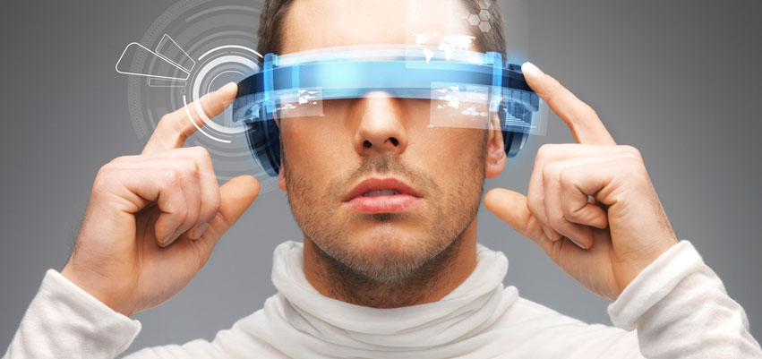

Що таке AR?
термін, що позначає всі проекти, спрямовані на доповнення реальності будь-якими віртуальними елементами. ... mixed reality), в яку також входить «доповнена віртуальність» (коли реальні об'єкти інтегруються у віртуальне середовище)
Типи AR
Пристрої, здатні створювати доповнену реальність, можна розділити на наступні групи. Мобільні пристрої. До них відносяться планшети, смартфони, окуляри і, в перспективі, лінзи доповненої реальності.
Сфери використання AR
Доповнена або змішана реальність дозволяє додавати віртуальні об'єкти в реальний світ і взаємодіяти з ними. Реалізація технології можлива на потужних смартфонах, планшетах і спеціальних окулярах доповненої реальності, при цьому обсяг ринку оцінюється сотнями мільйонів користувачів. Singularity Lab більше 5 років розробляє проекти з використанням технологій доповненої реальності. На даний момент наша команда має унікальний досвід і передовими інструментами.